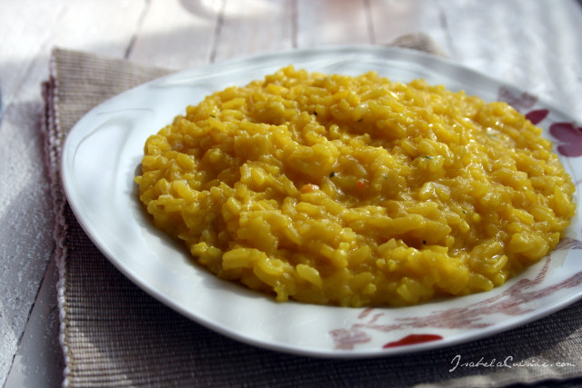

Risotto alla milanese

Description
Risotto alla Milanese is a traditional dish from Milan, famous for its
golden yellow color given y saffron and its creamy texture.
Ingredients
- 320 g of Carnaroli rice
- 1 liter of meat broth
- 1 packet of saffron
- 1 onion
- 50 g of butter
- 50 g of grated parmesan
- 1 glass of dry white wine
- Salt to taste
Steps
-
Finely chop the onion and sauté it in half of the butter until it
becomes translucent.
-
Add the rice to the pan with the onion and toast it for a couple of
minutes, stirring continuously.
- Pour in the white wine and let the alcohol evaporate.
-
Add a ladle of hot broth at a time, stirring often and waiting for the
liquid to be absorbed before adding more.
-
Dissolve the saffron in a little hot broth and add it to the risotto
halfway through cooking.
-
When the rice is al dente, turn off the heat and add the remaining
butter and parmesan. Stir vigorously to make it creamy.
- Let it rest for a minute and then serve the risotto hot.
Spaghetti alla carbonara
Tiramisu